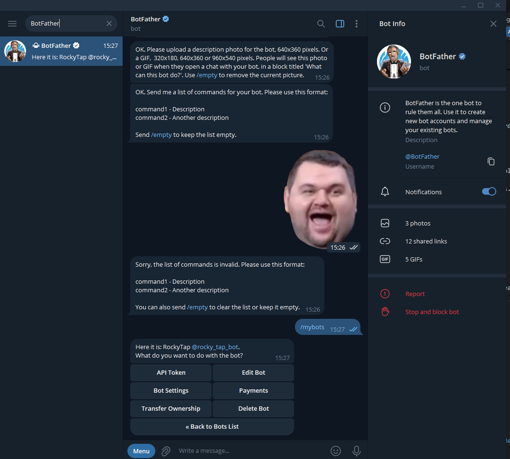
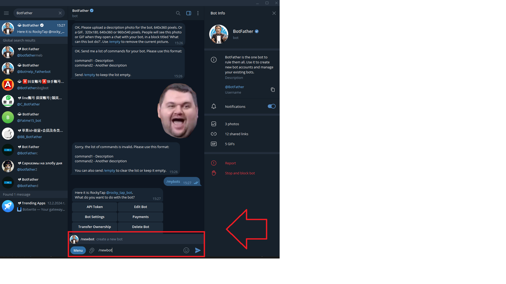
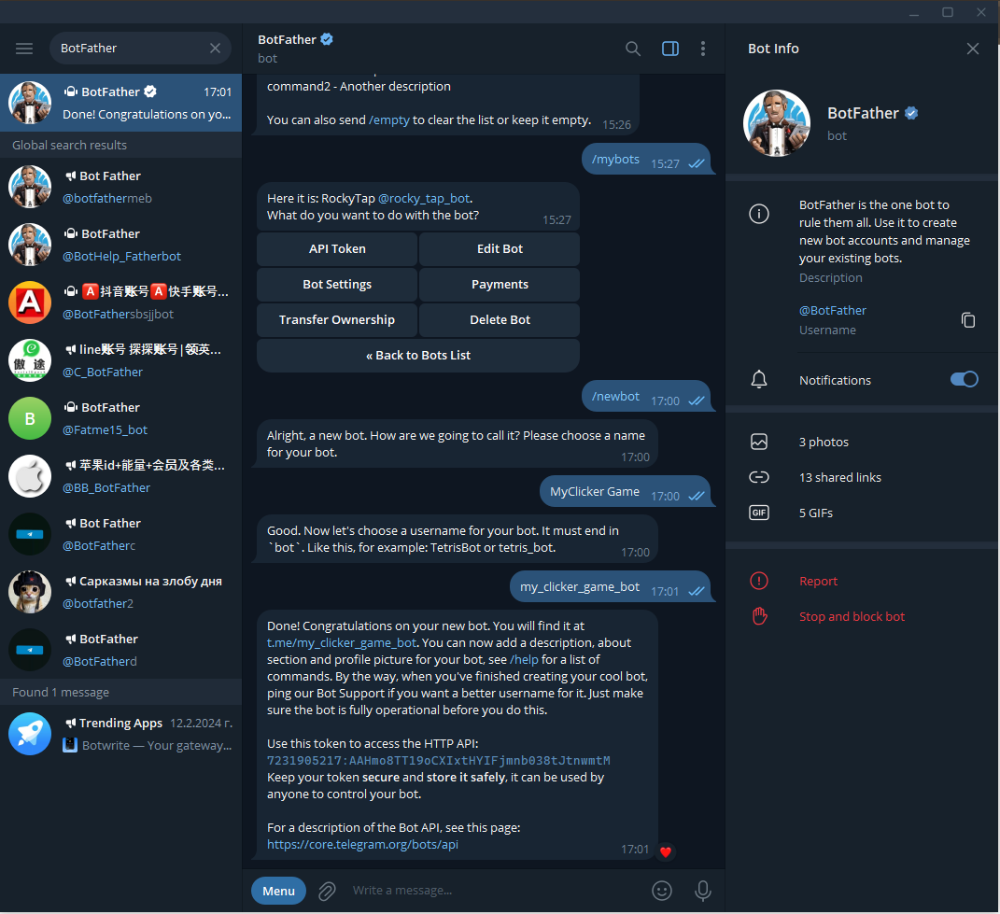
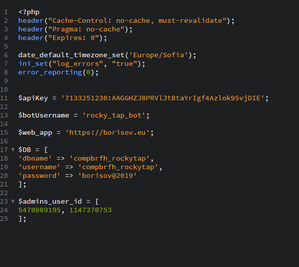
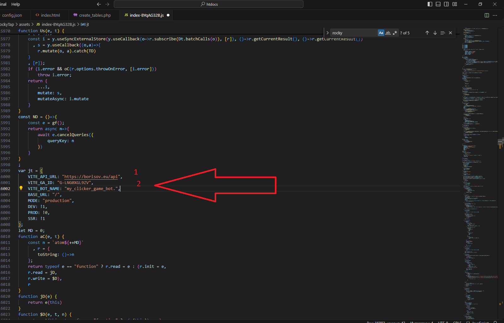
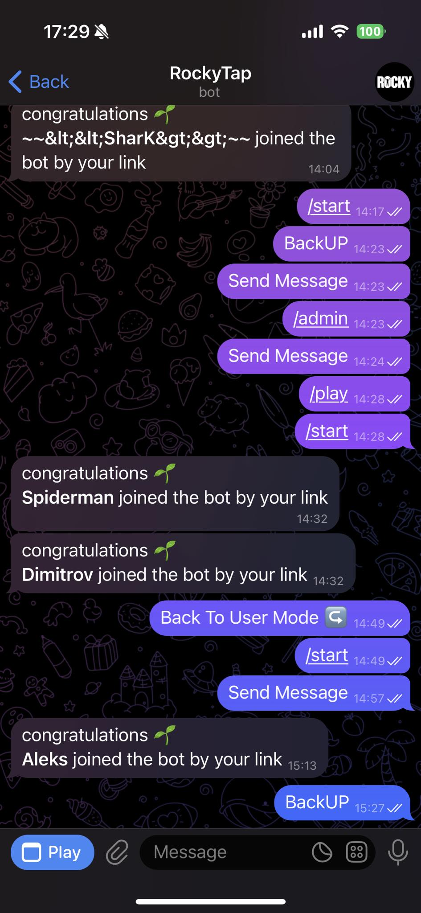
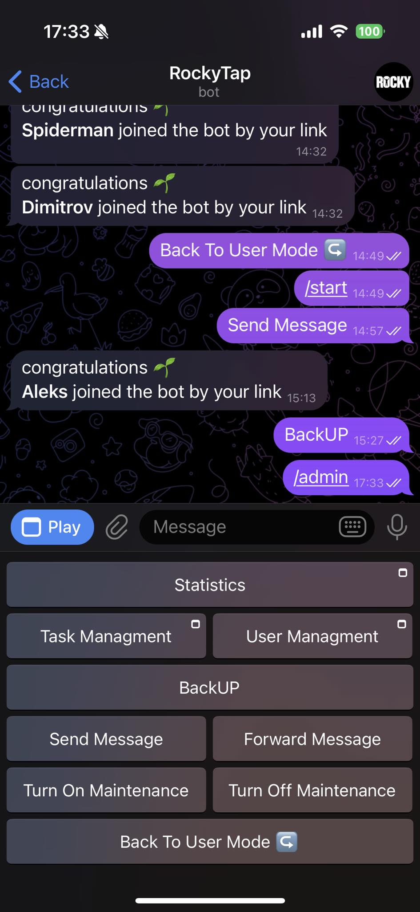

Howdy!
You are a shining owner of a regular license based on RockyTap - Tapswap like telegram mini game
First of all, Thank you so much for purchasing this software and for being my loyal customer. You are entitled to get free updates to this product + exceptional support (as per market policy) from the author directly.
This documentation is to help you undesrstand the how to install the software and use it. Please go through the documentation carefully to understand how this software is made and how to edit this properly. Basic PHP, JS and MYsql knowlage is required to customize this software.
1. Getting Started
When you are ready to use the game, you must first upload the game source files to a local or remote server. In this regard, unzip the "RockyTap" package you have downloaded from codecanyon. In extracted folder you can see following folders:
Package contents
- RockyTap — Contains all the original software files comprises of PHP,HTML, CSS, JS etc. This is the folder which you'll upload on your server after necessary modifications.
- Documentation — Inside this folder you will find this same documentation updated with the last changes.
Installation
- Upload the content of RockyTap folder to your server

- Create your telegram bot: first you will need telegram account when you are in your telegram account please search for
"BotFather" - bot in telegram 
after you complete this step now we can create our telegram bot! To do this please write in the message section "/newbot" 
Now give to your bot name for example "MyClicker Game" , after enter your bot name again but like this "my_clicker_game_bot" - this is necccesary to obtain a bot url
 save your bot name :my_clicker_game_bot
and api key example with the code from the image :7231905217:AAHmo8TT19oCXIxtHYIFjmnb038tJtnwmtM
now let's create a webhook : if you have uploaded the script to your hosting please edit this link https://api.telegram.org/botyour_api_key_here/setwebhook?url=https://your_domain_name_here/bot/index.php
the final result need to looks like this https://api.telegram.org/bot7231905217:AAHmo8TT19oCXIxtHYIFjmnb038tJtnwmtM/setwebhook?url=https://borisov.eu/bot/index.php
2. Database and JS files
Once we have setup our Telegram bot , webhook and we have uploaded files , we can connect our database and import it.
To to this we need to navigate into directory bot/confing.php
Now you will see the following line of codes
$apiKey = 'your_telegram_api_key';
$botUsername = 'my_bot_name';
$web_app = 'https://yoururlhere.com';
$DB = [
'dbname' => 'your_database',
'username' => 'your_database_user',
'password' => 'Your_database_password'
];
$admins_user_id = [
admin_id_one, admin_id_two_if_is_needed_if_no_delete_this
];
$apiKey = '7231905217:AAHmo8TT19oCXIxtHYIFjmnb038tJtnwmtM';
$botUsername = 'my_clicker_game_bot';
$web_app = 'https://borisov.eu';
$DB = [
'dbname' => 'mybot',
'username' => 'myuserbot',
'password' => '#data@taokda2%'
];
$admins_user_id = [
125125166,
];
Perfect !
Now please navigate to your URL and open the following url
https://yourdomain.com/database/create_tables.php
for example : https://borisov.eu/database/create_tables.php
if you have message "DONE", everything is okay and we can moove to our next step.

Now please navigate to file "/assets/index-BYqAG32B.js"
Open the file using visual studio code peres CTRL and F and search for "https://yourdomain.com" replace all results with "https:yourdomain.com"
with your acctuall domain name for example "https://borisov.eu" and perform the same action for result "your_bot_name_here" , in our example we will have the my_clicker_game_bot.

3. Game Play And Admin
Congrats you have just your first Tap To Earn game up and running
Navigate to telegram url of your bot for example : https://t.me/rocky_tap_bot?start=r_5470989195

type start and hit the PLAY button
4. Admin
Type on your bot again "/admin" then you will be able to check statistics , add new missions , manage and delete them

This is everything enjoy on your game , thank you again for your order and stay tuned for updates!